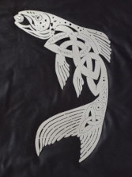

Celtic Mythology is not talked about in the same way that Greek or Nordic Mythology is. While Greek and Nordic characters can be found in big movies like in the Avengers movies or in Wonder Woman or whose influence can be seen in books like the Percy Jackson series or in the Dwarves of Lord of the Rings, Celtic mythological is rarely presented in movies or books, especially well known movies and books.
Irish Mythology
Irish Mythology is Celtic Myths from Ireland and is probably the most well known. In Irish Myth, there are four different cycles:
- The Mythological Cycle: involves stories of how the Irish gods called the Tuatha Dé Danann arrived in Ireland, stories of their time in Ireland including their fights with the Fomhoire, and how the Irish arrived in Ireland
- The Fenian Cycle: centers around the hero Fionn mac Cumhaill and the Fianna, a group of warriors Fionn leads
- The Ulster Cycle: centers around the province of Ulster and the hero Cú Chulainn
- The Historical Cycle: stories about kings of Ireland that are a mix of history and myth
Irish Mythology also has some unusual stories in it. One example is the story of the first people to reach Ireland who only had three men and over a hundred women survive the journey, with two of the men dying soon after and the final man turning into a salmon that lives for at least hundreds of years called the Salmon of Knowledge, with the transformation never being explained.
Examples of Irish Deities
| Irish Deity | Domain | Name's Meaning | Fun Fact |
| The Dagda | Agriculture, Fertility, Weather, and Seasons | The good god | He has a harp that is able to control people's emotions |
| The Morrigan | War and Fate | Phantom Queen | She is both a single goddess and three goddesses |
| Lugh | Nobility, Justice, Oaths, and Crafts | May come from Proto-Indo-European word for 'to bind by oath' | Lead the Tuatha Dé Danann to vistory against their ancient enemy the Fomorians |
| Brigid | Knowledge, healing, poetry, agriculture, and protection | The exalted one | She is the daughter of The Dagda and may be a triple deity like The Morrigan |
| Cailleach | Cold and Winds | Old Woman or Hag | Determined how long and harsh winter would be |
Celtic myths are under utilized by writers and have many interesting stories to tell. Hopefully, hearing some of the interesting creatures, characters, and stories from these myths will convince more people to look at and utilize them in their own stories.